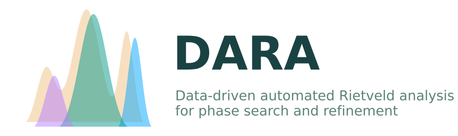

Overview#
{kind=link}
Dara is a Python package for phase analysis and refinement of powder X-ray diffraction (XRD) data.
Some features of Dara include:
Automated refinement: Automatically refine a powder XRD pattern with the Rietveld method by calling the BGMN program from Python.
Phase identification: Identify phases in a powder XRD pattern using a parallelized tree search procedure customized to use any crystallographic database or provided CIFs.
Multiple hypotheses: Compare between multiple possible fits (hypotheses) during phase identification performed on a powder XRD pattern.
Data visualization: Plot powder XRD data and the results of phase identification and refinement, including missing/extra peaks.
Constrained search: Constrain phase search space using suggested pre-filtering of crystallographic databases, as well as reaction energetics and predicted products.
Installation (recommended)
The easiest way to install the latest release of Dara is via pip from PyPI:
pip install dara-xrd
Wanna have a quick try?#
🚀 Try the Dara Web Server!
For the fastest way to experience Dara, launch the web server and use the browser-based interface:
dara server
Then open your browser and navigate to http://localhost:8898. You will have a full application with all the features of Dara, including data management, phase analysis, and refinement.
Tutorials#
Using BGMN as a backend, Dara provides a simple and automated way to refine phases in powder X-ray diffraction (XRD) data.
Dara provides a parallelilzed tree search algorithm to search for phases in powder X-ray
diffraction data. It needs only two inputs:
(1) the raw X-ray diffraction pattern and (2) the reference phases. For the latter, Dara
also implements CODDatabase and ICSDDatabase to
help users query the reference CIFs in chemical system of interest in the COD and ICSD databases.
See also
This project gets a lot of inspiration from the Profex project led by Nicola Döbelin. We are very grateful for their work.
The BGMN binary and supporting files are all extracted from Profex with kind permission from the Profex development team.
See also
BGMN and related files are bundled with kind permission of the BGMN development team. For source code and further information, please visit http://www.bgmn.de.